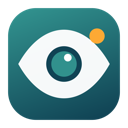
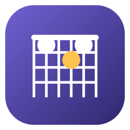
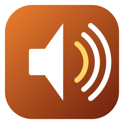
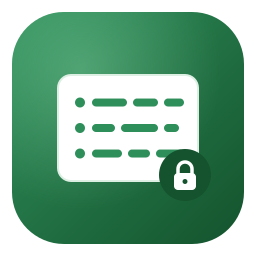

Ten small Mac apps.
Each does one thing, says exactly what it touches, and never phones home. Free, MIT licensed, no accounts. Built by Keith Adler.
Ask for Mac
Ask your Mac a question in your own words, from any app with ⌥ Space. Get the answer, and the file it came from. Documents, downloads, iCloud Drive, mail, screenshots and notes, read on this Mac.
Nothing leaves the Mac. Apple's on-device model writes the answer with citations, and says so when your files don't have it.
DownloadSourceStash for Mac
Encrypted backup into storage you already have: the Google Drive that comes with Gmail, the OneDrive that comes with 365, iCloud, Dropbox, a disk, a NAS. Several at once, on a schedule.
The provider only ever sees ciphertext. Your key is 24 words on a card. No password, no recovery, no server.
DownloadSourcePermissions for Mac
Every permission on your Mac on one screen, in plain English, with what changed since last week. Camera, microphone, screen, keyboard, files, and everything that starts without you.
It never changes a permission for an app you have. Also a command line with policy audits for fleets.
DownloadSourceMeet for Mac
It sits in the meeting with you. Ask "do I have anything at 2 tomorrow?" and your calendar answers. When the other side asks what you agreed last time, the quote appears before you look. Two people on one microphone are told apart and named. Then the notes write themselves.
Nothing leaves the Mac. No bot joins the call, nothing is uploaded, not even to write the notes.
DownloadSource
Sweep for Mac
Finds the personal data already sitting in your files: card numbers, bank details, identity numbers, private keys, API tokens, passwords saved as ordinary text, and the browser password export you forgot you made. It even reads the text inside your screenshots.
It never uploads a file, never changes one, and never writes down the secret it found.
DownloadSource
Chordmap for Mac
Play a song in any app on the Mac and see the chords as they go by: the key, the tempo, the bars by section, and where the capo goes so the open shapes play it. Every listen kept with its chord sheet. A guitar into an interface works too.
It hears; it never records. No database, no song titles, nothing leaves the Mac.
DownloadSource
Amp for Mac
A drum amp for the input of the audio interface you already own. Plug a mic or a trigger in, press the button, play through a gate, punch, squash, tone, drive and a room, with thirty-nine sounds in twelve genres. It says which way to turn the gain knob. The Ear tab charts the key, tempo, chords and capo of whatever the Mac plays.
It listens to one input and plays to one output. Nothing is recorded, nothing leaves the Mac.
DownloadSourceAll five are ad-hoc signed, so the first open is a right-click and Open. Each checks GitHub once a day for a new version and can be told not to. Nothing else leaves the Mac.
Three small Windows apps.
Same shape as the Mac ones: one thing, plain English about what it touches, never phones home. Free, MIT licensed, no accounts.
Plain for Windows
A bare-bones editor for the Word, Excel and PowerPoint files other people send you. Change the words, the numbers and the formulas; sort rows; insert a row and every total follows; fit a column to its contents and keep the header on screen; find and replace across the whole file; read the tracked changes and settle them one at a time; strip the author's name before it goes back out. One exe, no ribbon, no account, no assistant.
It never damages what it cannot show you. Charts, macros, pivot tables and headers are written back as the exact bytes it found. Open a file, save it without changing anything, and you get the same file back byte for byte, which is a claim its own tests check on every build.
DownloadSourceQuiet for Windows
Every piece of bundled junk, advertising surface, AI hook and telemetry switch on your PC on one screen, in plain English, each with what it costs you to turn it off. Solitaire, Clipchamp and the Bing apps ticked for you; Copilot, Recall and Click to Do named; the Settings home page, the lock screen offers, Bing in the search box. One tick reaches every account on the PC.
It never changes anything without a receipt that undoes it. It never connects to anything. A removed app is the one thing it cannot put back, and it says so.
DownloadSource
Stash for Windows
Encrypted backup of the folders that matter, into the storage you already have: the OneDrive that comes with 365, the Google Drive that comes with Gmail, Dropbox, iCloud, a disk, a NAS. Several at once, on a schedule. Same format and same card as Stash for Mac.
The provider only ever sees ciphertext. Your key is 24 words on a card. No password, no recovery, no server.
DownloadSourceWindows 10 and 11, ARM64 and x64. One exe, no installer, no runtime to install. It is signed by its author, so the first open is SmartScreen's More info, then Run anyway. Nothing leaves the PC.